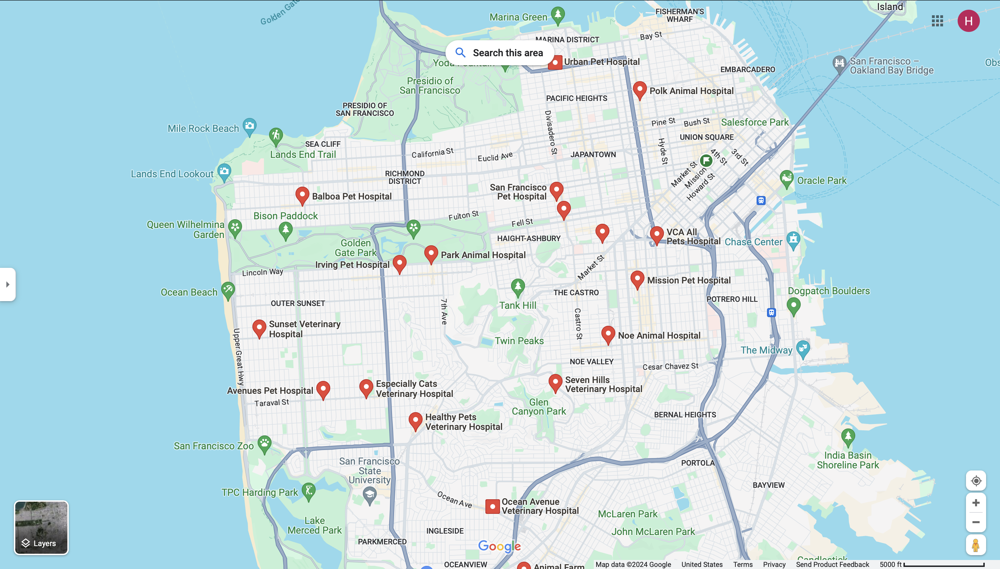

-
Paws & Claws Veterinary Clinic - 4.5 stars
123 Folsom St, San Francisco, CA 94103 -
Urban Animal Hospital - 4.8 stars
456 Mission St, San Francisco, CA 94105 -
Happy Pets Veterinary Center - 4.2 stars
789 Castro St, San Francisco, CA 94114 -
Healing Paws Vet Clinic - 4.6 stars
101 Market St, San Francisco, CA 94105 -
The Pet Health and Wellness Center - 4.7 stars
202 Van Ness Ave, San Francisco, CA 94102 - In Case of Emergency Call 911